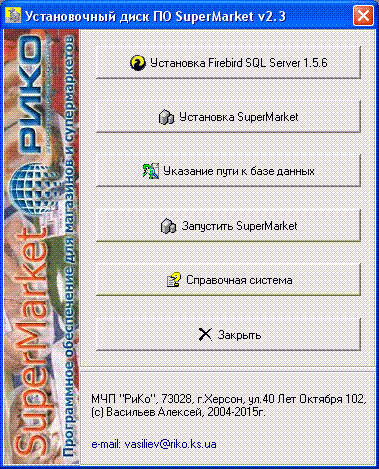

Установку программного обеспечения условно можно разделить на две части: установку сервера баз данных Firebird® SQL Server, и собственно, установку самого программного обеспечения SuperMarket.
Если вы устанавливаете программу с диска-дистрибутива, и включен автозапуск, то появится следующая сервисная утилита, помогающая последовательно установить всё необходимое и произвести настройку. Если автозапуск не включен или не сработал, то запустите файл Autorun.exe в корне инсталляционного диска или образа.

.